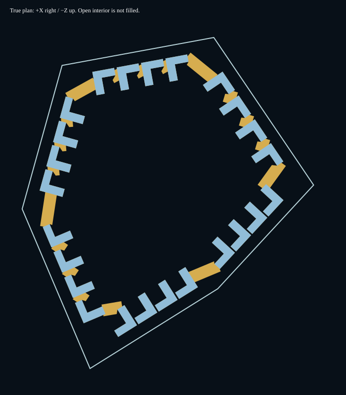

Partial architectural vocabulary: existing approved prototype operations, not complete authentic Print-Contour formation. No upper levels or terraces were invented. 6 connected solid region(s); 6 unresolved connections. No continuous 3-ft-clear floor route: subtracting generated walls/nodes and testing a 1.5-ft clearance radius leaves zero area. Exploratory geometry remains visible.
24 native L letters · 43 components · 639.082 ft² footprint · 16.668% coverage · 3195.066 ft² undeveloped. Coverage reference 40%, not a constraint.
Saved meshes and A/B provenance · Orthographic diagnostic
{
"id": "d4cdcbaf827517cf0fb0995730215be6de8846eee982d79da5d7612e50626d17",
"measurements": {
"zoneAreaFeet2": 3834.147941022576,
"buildingFootprintFeet2": 639.081644209932,
"buildingCoveragePercent": 16.66815297793354,
"floorAreaFeet2": 639.0816479197299,
"sourceLetterFootprintFeet2": 460.37809010993647,
"protectedRecessAreaFeet2": 173.63705589460113,
"exportedRecessOverlapFeet2": 0.00003780612154105634,
"exportAreaToleranceFeet2": 0.00008,
"outsideAreaFeet2": 0,
"protectedOverlapFeet2": 0,
"solidComponents": 6,
"floorRegions": 6,
"heightFeet": 6,
"unusedZoneAreaFeet2": 3195.066296812644,
"unexpectedComponentIntersectionCount": 0,
"maximumComponentOutsideAreaFeet2": 0,
"sourceCollisionCount": 0,
"letterCount": 24,
"componentCount": 43,
"edgeParticipation": 6,
"arrangementDimensionsFeet": [
61.67635309487003,
71.52053596546824,
0.9130434821481295
]
},
"unresolved": [
{
"sources": [
"L-9",
"L-10"
],
"reason": "No interface pair passes unchanged contact, clearance and recess tests"
},
{
"sources": [
"L-10",
"L-11"
],
"reason": "No interface pair passes unchanged contact, clearance and recess tests"
},
{
"sources": [
"L-11",
"L-12"
],
"reason": "No interface pair passes unchanged contact, clearance and recess tests"
},
{
"sources": [
"L-13",
"L-14"
],
"reason": "No interface pair passes unchanged contact, clearance and recess tests"
},
{
"sources": [
"L-14",
"L-15"
],
"reason": "No interface pair passes unchanged contact, clearance and recess tests"
},
{
"sources": [
"L-15",
"L-16"
],
"reason": "No interface pair passes unchanged contact, clearance and recess tests"
}
],
"sourceCollisions": [],
"componentOutside": [],
"unexpectedIntersections": [],
"limitations": [
"Full-zone placement using unchanged accepted prototype formation operations; not complete authentic Print-Contour architecture.",
"Upper rotation, running bond across multiple courses and terraces not implemented in this prototype.",
"3-ft floor ribbons are not a certified walkable route; source nodes may obstruct circulation.",
"Snapshot source alignment only; no live Site publication or browser storage mutation.",
"L-only demonstration; U/V placement and junctions not validated."
]
}